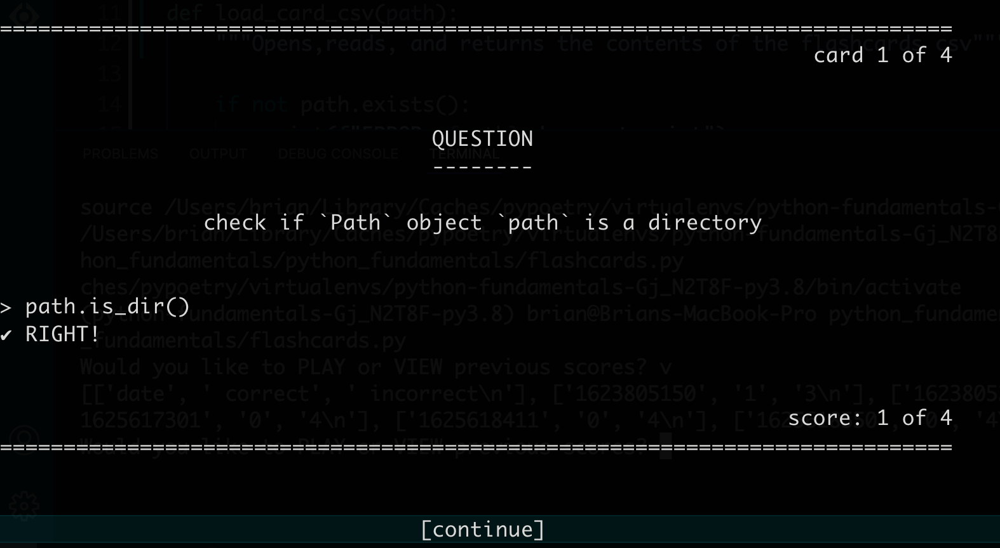

Flashcards Project¶
This is the project to apply what we’ve learned in the Files lessons.
The project is to write a program for running through flashcards. Card data is
stored in csv files in the data/flashcards directory.

Instructions¶
Part 1: Make a csv file¶
The flashcards data will be stored in csv files in a directory named
data/flashcards. The idea is to eventually have multiple files for different
topics that you might want to study like paths.csv, functions.csv and so
on. For now though, just make one file.
[ ]Create a folderdata/flashcardsif it doesn’t already exist[ ]Make acsvfile with flashcard data[ ]In thedata/flashcardsdirectory manually make file ending in.csv. For examplepaths.csv.[ ]Each line should be one card with the format:text for front, text for back.
For example:front, back import the Path class, from pathlib import Path check if Path object path exists, path.exists() check if Path object path is a file, path.is_file() check if Path object path is a directory, path.is_dir()
Part 2: Start flashcards.py¶
Start your flashcards.py file.
[ ]write amain()function[ ]print any temporary debug message in it[ ]call it
Part 3: Start load_csv()¶
The load_csv() function should take one argument, a Path object to a csv
file. Eventually it will return a list where each item is a dict with "front"
and "back" keys, one for each row in the file except the header.
For now though, make a simple function that just takes a Path object, prints
the location, and makes sure the file exists.
load_csv()
[ ]write aload_csv()function that takes one argument:path[ ]check to make sure thecsvfile exists. If not, print an error message that includes the path then return[ ]print a temporary debug message:loading file: path
in main()
[ ]make aPathobject to yourcsvfile[ ]call yourload_csv()function, passing it yourPathobject as the argument, and assign the returned value to a variable namedcards
Part 4: Read each line of the csv file¶
Expand the load_csv() function to read and print every line in the file.
in load_csv()
[ ]open the csv file in read mode using theopen()function[ ]usefh.readlines()to iterate through each line in the file[ ]for temporary debugging, print each line
Part 5: Get the card data from the csv file¶
Continue expanding the load_csv() function to extract the card data from each
line, put it into a dictionary named cards with the keys "front" and
"back".
in load_csv(), in the readlines() loop
[ ]make an emptydictassigned to a variable namedcard[ ]split each line on the","using the.split()method and assign the result to a variable namedrow[ ]check that there are two items in the row using thelen()function. If not print an error message and return[ ]assigncard["front"]to the first item in the row, andcard["back"]to the second[ ]for temporary debugging, print thecarddict
Part 6: Return the card data to main()¶
Have load_csv() put all of the card dictionaries into one big cards
list and return that to main().
in load_csv(), before the readlines() loop
[ ]make an emptylistassigned to a variable namedcards
in load_csv(), at the end of the readlines() loop
[ ]use the.append()method on thecardslistwith the argumentcard
in load_csv(), after the loop
[ ]returncards
in main()
[ ]if thecardslistis falsy,return[ ]otherwise, print thecardslistfor temporary debugging
Part 7: Remove extra whitespace¶
In order to make sure that the flashcards are printed nicely and that the users
answers get matched up correctly, the trailing "\n" needs to be removed from
the end of each line. Any extra spaces that happen to be around the "," or at
the beginning or end of the line also need to be removed.
in load_csv(), in the loop
[ ]remove leading and trailing whitespace by calling the.strip()method oncard["front"]andcard["back"]
part 8: Skip the header row and blank lines¶
To avoid having a flashcard pop up that reads "front", don’t append the
header row to the cards list. Also skip any blank lines in the file.
in load_csv(), in the readlines() loop, before append
[ ]check ifcard["front"]is"front"andcard["back"]is"back". If so,continueto avoid appending to the cards list[ ]check iflineis equal to"\n". If so,continue.
Part 9: Start the play() function¶
This function should take one argument, the list of cards. Eventually it will contain the user interface for running through each card, getting the answers from the user, and printing the score.
For now ‘ll just write a play() function and call it.
play()
[ ]write aplay() function that takes one argument:cards[ ]for temporary debugging, print something from it
main()
[ ]callplay()passing it the list ofcards
Part 10: Go through each card in random order¶
In this next part we’ll be metaphorically drawing a card at random from the deck until there are none left.
The trick is to make a while loop that checks the truthy value
of cards, so that it stops as soon as its empty. The inside the loop, use the
random.choice() method to pick a card at random, then remove it from the list.
at the top of your file
[ ]importtherandommodule
in play()
[ ]make a while loop where the condition is:cards
in play(), in the loop
[ ]userandom.choice()to get a random item from thecardslist and assign it to a variable namedcard[ ]call the.remove()method oncardswith the argumentcardto remove the card from the list[ ]for temporary debugging, printcard
Part 11: Test the user¶
This is where things start to get exciting! In this part we’ll print the front of the card, ask the user for their answer, and let them know if it was right or not.
in play(), in the loop
[ ]printcard["front"][ ]prompt the user for their answer using theinput()function and assign the result to a variable namedanswer[ ]check if theansweris the same ascard["back"][ ]if so, print"CORRECT"[ ]if not, print"INCORRECT",thencards["back"]
[ ]callinput()asking if the user wants to continue[ ]if not, return
in play(), after the loop
Part 12: Scorekeeping¶
Now lets keep track of which card the user is on, and what their score is.
in play(), above the loop
[ ]make ascorevariable set to0[ ]assign the length of cards to a variabletotal[ ]make anumvariable set to1
in play(), in the loop
[ ]at the top of the loop printcard num of total[ ]when you check if theansweris the same ascard["back"][ ]if so, incrementscoreby one
[ ]at the end of the loop, incrementnumby1
in play(), after the loop
[ ]print"score of total"
Part 13: Prettify flashcards¶
This part is about making the the flashcards look nicer. Feel free to adjust these suggestions to your taste.
throughout your file
[ ]get rid of any debugprint()statements
at the top of your file
[ ]make a global variableWIDTHand set it to around75
in play()
[ ]print a line to the beginning and end of each card[ ]add some extra newlines around various elements[ ]center any string by calling the.center()method on it and pass the argumentWIDTH. For example, thecard["front"]line.[ ]right align any string by calling the .rjust() method on it and passing the argumentWIDTH. For example, thecard x of yline.[ ]print"score of total"after the end of each card
Part 14: Wrap long questions¶
In this part wrap questions that are too long so that they are split into multiple lines.
at the top of your file
[ ]If you want your questions to be wrap at a shorter length thanWIDTH, set aMAXWIDTHglobal variable.[ ]importthetextwrapmodule
in play(), in the loop
[ ]Calltextwrap.wrap()with the argumentscard["front"]and the width you want to wrap at, eitherMAXWIDTHorWIDTH. This will return alistof strings, where each item is a line. Assign the results to a variablelines.[ ]Remove the code that printscard["front"][ ]Iterate over thelineslist, and print each item.
Part 16: Allow answers with commas¶
Many answers have commas in them, so instead of manually parsing the csv file,
lets use the built in csv module.
We’ll create and iterate over a csv.reader object, which will provide each
line split into a list of fields that we can use as the row. Then either
remove all of the places where we use line, or replace them with an
equivalent for row.
at the top of your file
[ ]importthecsvmodule
in load_csv() after opening your file
[ ]Create a new csv reader like so:reader = csv.reader( fh, quotechar="'", skipinitialspace=True, escapechar="\\" )
[ ]Instead of iterating overfh.readlines(), iterate over thereaderobject. Change the variable name in the for loop torow.
in load_csv(), in the for loop
[ ]Remove therow = line.split()line. (Sincerowis now a list provided by thereaderobject.)[ ]Check ifrowis an empty list. If so,continue.
Part 17: limit CLI argument¶
In this section we’ll change the program to accept an optional command line argument to limit the number of cards to show.
So, if at the command line you type:
$ python flashcards.py 10
Then at most 10 flashcards will be shown.
Or if you type:
$ python flashcards.py
Then then you’ll go through all of the flashcards for the selected topic(s).
In the main() function, before calling play():
[ ]Check ifsys.argvhas more than1item. If so:[ ]assign the second value in thesys.argvlist, converted to anintto the variablelimit[ ]get a slice of thecardslist with a size equal tolimitand assign it back to the variablecards
Bonus ideas¶
keep a log with dates and scores
print any cards that the user got wrong again at the end after showing the score
Card data¶
Download the following flashcard files or feel free to make your own.